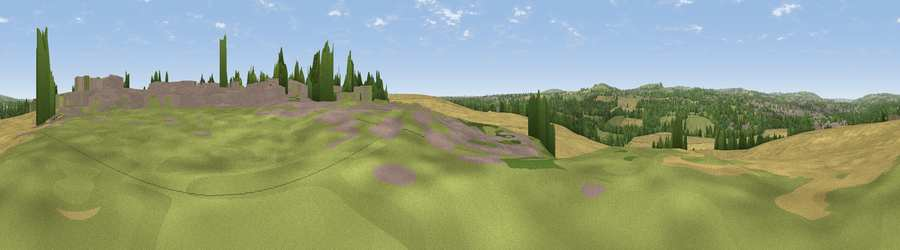

Viewpoint near Great Lumley
#34227 in England · top 75% of its area beats it · near Great LumleyWhere it is
The exact computed spot (NZ 28982 49162). Click the marker for map links.
The view, rendered

A 360° render of this exact spot computed from the terrain model, tree cover and land cover — summer colours, afternoon light, calibrated against photographs of famous viewpoints. Real trees, hedges and buildings will differ in detail.
The panorama
Grey silhouette: terrain skyline in each direction (720 bearings, Earth curvature and refraction included). Dashed green: skyline with trees (+15 m) and buildings (+8 m) as obstacles. Blue strip: how far the ground is visible on each bearing.
Where the view opens
Wedge length = distance to the farthest visible ground on that bearing (vegetation-aware). Rings at 10, 25 and 50 km.
What fills the view
44% cropland · 25% grassland · 19% woodland · 12% built-up
Angular shares of the visible panorama (visual magnitude), not map area. Landscape diversity 0.56 (0–1 Shannon).
Key numbers
More beautiful places nearby
The staircase of upgrades: each row has a higher view potential than everything closer. Driving times are estimates from straight-line distance, calibrated against real road routing — check an actual route before setting out.
| Place | Direction | Drive | Score |
|---|---|---|---|
| Viewpoint near Kimblesworth | SW · 3 km | ~7 min | 43.2 |
| Viewpoint near Kimblesworth | WSW · 4 km | ~10 min | 62.4 |
| Viewpoint near Sacriston | WSW · 5 km | ~11 min | 66.4 |
| Viewpoint near Edmondsley | W · 6 km | ~12 min | 72.3 |
| Viewpoint near Edmondsley | W · 7 km | ~14 min | 72.6 |
| Penshaw Hill | NE · 7 km | ~14 min | 75.1 |
| Viewpoint near Houghton-le-Spring | E · 9 km | ~17 min | 76.0 |
| Viewpoint near Sunniside | NW · 11 km | ~21 min | 77.6 |
54.83645, -1.55031 · source: osm viewpoint · position refined by local search. Computed location — check access rights before visiting.